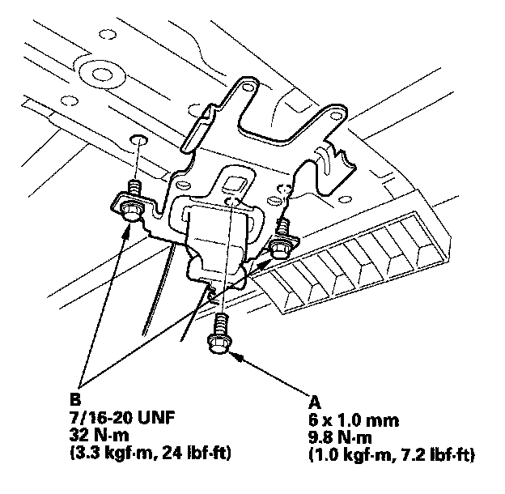

Second Row Seat Belt Replacement
Second Row Seat Belt ReplacementNOTE: Check the second row seat belts for damage, and replace them if necessary.
Second Row Seat Belt
1. Slide the second row seat forward fully.
2. Remove the rear side trim panel.
3. Pull the carpet (A) back, and remove the lower anchor bolt (B).
4. Remove the seat belt exit C-pillar cap (A).
1. Pull out the rear upper corner of the cap to release the upper hook (B) and the rear hook (C).
2. Release the front hook (D) and lower hook (E) together by pulling the cap upward and rearward.
3. Take the cap off the second row seat belt (F).
5. Remove the upper anchor bolt (B).

6. Detach the clip (A) by pulling the bottom of the quarter pillar trim (B) back. While holding the trim away from the C-pillar, pull the second row seat belt, upper anchor (C), tongue plate (D), and the lower anchor (E) into the trim, and pull the entire second row seat belt down.
7. Remove the upper retractor mounting bolt (A) and the lower retractor bolt (B), then remove the front seat belt (C) and retractor (D). The left second row seat belt is shown; the right second row seat belt is similar.
8. Install the seat belt in the reverse order of removal, and note these items:
- Apply medium strength type liquid thread lock to the anchor bolts before reinstallation.
- Tighten the bolts by hand first, then tighten to the specified torque.
- Check that the retractor locking mechanism functions.
- Assemble the washers, collar, and bushing on the upper anchor bolt as shown.
- Before installing the anchor bolts, make sure there are no twists or kinks in the front seat belt.
Left Seat Belt Buckle
NOTE: Take care not to tear the seams or damage the seat covers.
1. Remove the left second row seat.
2. From under the seat cushion, release the hooks of the back cover carpet from the seat cushion frame, then pull the carpet back.
3. With seat heater: Disconnect the seat cushion heater connector, and remove the wire ties.
4. Remove these items:
- Recline outer cover.
- ISO fix bracket outer cover.
5. Remove the seat cushion from the left second row seat.
6. Remove the center anchor bolt (A), and remove the seat belt buckle (B).

7. Install the buckle in the reverse order of removal, and note these items:
- Apply medium strength type liquid thread lock to the anchor bolt before reinstallation.
- Assemble the washers, collar and bushing on the center anchor bolt as shown.
Right Seat Belt Buckle
NOTE: Take care not to tear the seams or damage the seat covers.
1. Remove the right second row seat.
2. Remove these items:
- Recline outer cover.
- Center outer cover.

3. Using a TORX T30 bit, remove the pivot bolt (A), then carefully lift the seat cushion (B) up as needed.
4. Remove the center anchor bolt (A), and remove the seat belt buckle (B).
5. Install the buckle in the reverse order of removal, and note these items:
- Apply medium strength type liquid thread lock to the anchor bolt before reinstallation.
- Assemble the washers, collar, and bushing on the center anchor bolt as shown.
Center Second Row Seat Belt
1. Detach the clips and remove the seat belt cover (A).
2. Remove the headliner.

3. Remove the upper anchor mounting bolt (A) and upper anchor bolts (B), then remove the upper anchor (C).
4. Remove the retractor mounting bolt (A) and retractor bolt (B), then remove the retractor (C).
5. Install the center second row seat belt and retractor in the reverse order of removal, and note these items:
- If the clips are damaged or stress-whitened, replace them with new ones.
- Apply medium strength type liquid thread lock to the anchor bolts before reinstallation.
- Check that the retractor locking mechanism functions.
- Before installing the upper anchor bolt, make sure there are no twists or kinks in the seat belt.
Center Second Row Seat Belt Buckle
NOTE: Take care not to tear the seams or damage the seat covers.
1. Slide the right second row seat fully forward.
2. Remove the ISO fix bracket outer cover.
3. Remove the center anchor bolt (A), and remove the seat belt buckle (B) from the elastic strap (C), then remove it through the space between the link bracket and seat cushion.
4. Install the buckle in the reverse order of removal, and apply medium strength type liquid thread lock to the anchor bolt before reinstallation.
Center Second Row Seat Belt Detachable Anchor
NOTE: Take care not to tear the seams or damage the seat covers.
1. Remove the left second row seat.
2. Remove the seat belt detachable anchor (A) from the elastic strap (B).
3. Remove the lower anchor bolt (A).
4. Remove the seat belt detachable anchor (A).
5. Install the detachable anchor in the reverse order of removal, and apply medium strength type liquid thread lock to the anchor bolt before reinstallation.